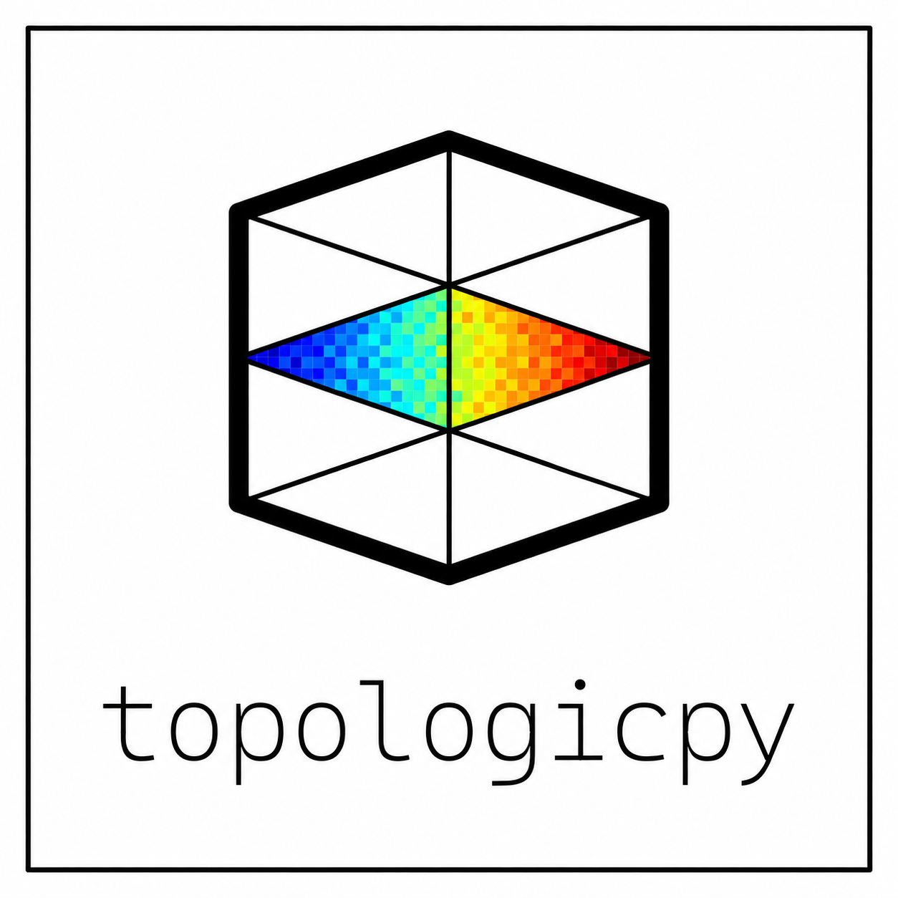

Discover the relationships across your building.
Computing with TopologicPy…
Run the included Python service locally, or connect a hosted instance. Your floor plans are sent only to the service you choose.
Hosted workspace connections need an HTTPS service. Local HTTP works when you open the app from the local service.
IFC geometry uses metres. Isovists stay horizontal, 1.6 m above each floor elevation. Open floor voids allow sightlines across them; walls and columns block visibility. Neither voids nor obstacles can be chosen as viewpoints or walked across. Incomplete connectors remain disconnected. Grid analyses support up to 10,000 points. Larger analyses may take longer.